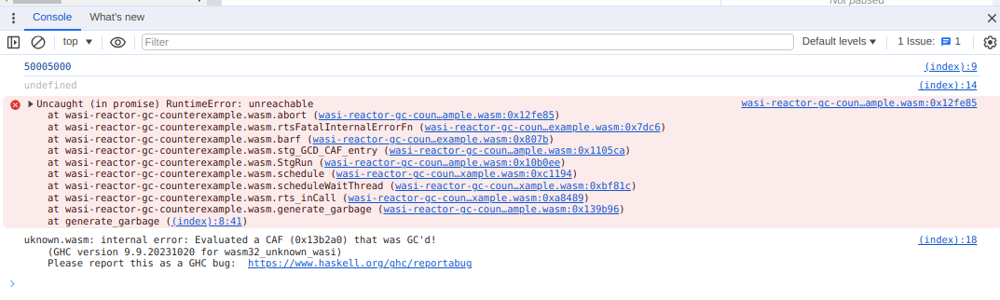

Steps to reproduce the bug:
- Click
generate_garbage()to run a heavy computation that allocates alot of heap memory - Click
perform_major_gc()to trigger garbage collection - Click
generate_garbage()again and then you'll probably see an error in browser console, pressprint_stderr()to see more relevant error messsage - In case the error did not reproduce try repeating the steps 1-3
When I perform described steps, one of the observed errors looks as following: 